MyHomeMaker 사용 설명서
MyHomeMaker 는 블록을 끌어다 놓아 홈페이지를 만드는 그래픽 웹사이트 제작 도구입니다. 코드를 몰라도 페이지를 쌓고, 글을 화면에서 바로 고치고, 디자인을 한 번에 바꾸고, 휴대폰에서 어떻게 보일지 확인하고, 문제점 패널로 고칠 점과 맞춤법을 점검한 뒤, 어디에나 올릴 수 있는 HTML·CSS 파일로 게시합니다.
| 한눈에 | |
|---|---|
| 블록 | 35가지(배너, 게시판, 특징, 서비스 카드, 사진첩, 가격표, 후기, 팀, 연혁, 자주 묻는 질문, 문의 양식, 지도, 동영상 …) + 사이트마다 머리글·바닥글 |
| 디자인 | 40가지(밝은 26 · 어두운 14) + 직접 만드는 내 테마: 색, 제목·본문 글꼴, 모서리, 내용 폭, 글자 크기 |
| 시작점 | 템플릿 12가지, 완성된 예제 사이트 40가지(네 분야 × 10, 그중 15가지는 게시판 포함, 한국어·영어) |
| 점검 | 문제점 패널: 오류·경고(게시 전 점검)와 맞춤법(영어 27만·한국어 10만 단어 사전 + 내 사전) |
| 확인 | 데스크톱·태블릿·휴대폰 너비, 미리 보기 모드, 실제 브라우저 |
| 게시 | 폴더, ZIP, 이 페이지만 HTML 한 파일 — 자바스크립트 없이 동작하는 정적 사이트 |
| 실행 | Windows · macOS · Linux 데스크톱 앱과 웹 버전 |
처음이라면 튜토리얼(F11)부터 보세요. 빈 사이트에서 4개 페이지짜리 요즘 스타일 홈페이지를 실제로 만들어 게시하기까지 보여 줍니다. 같은 내용이 튜토리얼 문서와 동영상(MyHomeMaker-Tutorial.mp4)에도 있습니다.
5분 만에 시작하기
- 새로 만들기(Ctrl+N)에서 템플릿이나 예제를 고르고 이름을 정해 만들기.
- 블록 패널의 블록을 누르거나 끌어 페이지에 넣습니다.
- 캔버스의 글을 눌러서 바로 고치고, 오른쪽 내용 탭에서 버튼 주소·그림·항목을 바꿉니다.
- 디자인 바꾸기(Ctrl+Shift+D)로 색과 글꼴을 한 번에 바꿉니다.
- 툴바의 휴대폰 단추로 좁은 화면을 확인합니다.
- 아래 문제점 패널에 남은 오류·경고·맞춤법을 고칩니다.
- 저장(Ctrl+S) 후 게시(Ctrl+Shift+P)로 폴더나 ZIP을 만들어 호스팅에 올립니다.
설치와 실행
| 대상 | 파일 | 설치 |
|---|---|---|
| Windows | MyHomeMaker-Setup-<버전>.exe | 실행하면 언어를 고르고 설치합니다. 이전 설치가 있으면 완전히 지운 뒤 다시 설치하며, 이전 사용자 데이터를 지울지 묻습니다. |
| macOS | MyHomeMaker-<버전>-<arch>.dmg | 열어서 응용 프로그램 폴더로 끌어 놓습니다. |
| Linux | .deb · .rpm · .AppImage | 패키지 관리자로 설치하거나 AppImage 를 실행합니다. |
| 웹 | MyHomeMaker-Web-<버전>.zip | 압축을 풀어 웹 서버에 올리고 index.html 을 엽니다. |
.myhome 사이트 파일과 .mhomt 템플릿 파일은 설치 후 MyHomeMaker 로 열립니다(두 번 누르거나 창으로 끌어 놓기). 다시 설치해도 내 사전의 단어는 남습니다.
설치 파일은 소스에서 다음 명령으로 만듭니다(Tauri 는 자기 운영 체제용만 만듭니다).
npm install
npm run build:win # Windows 설치 프로그램 (NSIS)
npm run build:mac # macOS (.app, .dmg)
npm run build:linux # Linux (.deb, .rpm, .AppImage)
npm run build:webapp # 웹 버전 ZIP
npm run build:all # 웹 버전 + 이 운영 체제의 설치 파일만든 파일은 release/ 와 프로젝트 폴더에 복사됩니다. 개발 중에는 npm start 로 앱을 띄웁니다.
화면 구성

- 메뉴 막대 줄 — 앱 아이콘·이름·버전, 시작 단추, 메뉴(파일·편집·삽입·페이지·보기·디자인·도구·도움말), 메뉴 오른쪽의 열린 사이트 이름(저장하지 않은 변경이 있으면 ●), 오른쪽 끝의 최소화·최대화·닫기. 이 줄이 제목 표시줄이라 빈 곳을 끌어 창을 옮기고 두 번 눌러 최대화합니다.
- 툴바 — 모든 단추는 아이콘만 보이고, 마우스를 올리면 이름과 단축키가 나옵니다. 새로 만들기, 열기, 저장, 인쇄, 브라우저 미리 보기, 게시(▾ 게시 방법) / 실행 취소·다시 실행 / 잘라내기·복사·붙여넣기·삭제 / 블록 추가·페이지 추가 / 위·아래로, 복제, 숨기기 / 기기 너비와 확대 비율 / 미리 보기 모드 / 패널 세 개(블록 · 문제점 · 사이트). 오른쪽 끝: 튜토리얼, 테마(무작위 ▾ 목록), 언어(국기), 설정, 프로그램 정보. 창을 줄여도 툴바 단추가 가려지지 않도록 창의 최소 폭이 툴바에 맞춰집니다.
- 블록 패널(왼쪽) — 다섯 묶음의 블록 목록, 찾기 칸, 그리고 사이트 디자인 묶음(내 테마 · 밝은 · 어두운 디자인의 미리 보기 카드). 디자인 카드를 누르면 사이트에 바로 보이고, 패널 아래의 적용으로 확정하거나 취소로 원래 디자인으로 돌립니다.
- 페이지 탭과 캔버스(가운데) — 탭마다 페이지 하나, 맨 앞 탭이 첫 페이지(index.html)입니다. 캔버스는 게시될 사이트와 똑같이 그려집니다.
- 문제점 패널(가운데 아래) — 고칠 점과 맞춤법 목록. 툴바의 가운데 패널 단추나 Ctrl+J로 열고 접습니다.
- 사이트 패널(오른쪽) — 위: 머리글, 페이지별 블록, 바닥글 목록. 아래: 편집기 탭(내용 · 스타일 · 페이지 · 사이트).
- 상태 표시줄 — 알림, 페이지와 파일 이름, 페이지·블록 수, 오류·경고·맞춤법 수(누르면 문제점 패널), 저장 상태, 선택한 블록, 기기 너비, 디자인, 테마, 언어, 확대 슬라이더, 시계.
패널은 접으면 아이콘만 남은 좁은 줄이 되고(Ctrl+Shift+1, Ctrl+Shift+2), 패널 사이 구분선을 끌어 너비와 높이를 바꿉니다.
시작 화면
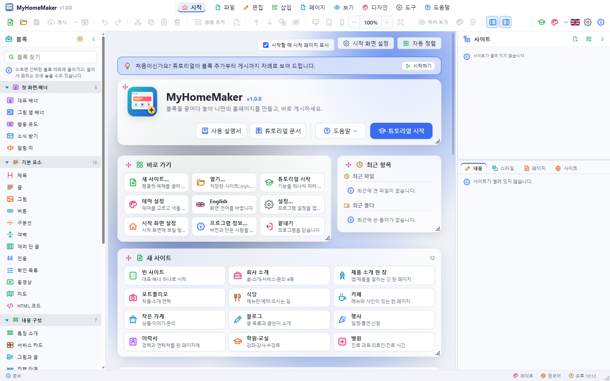
프로그램을 켜면(설정에서 끌 수 있음) 움직이는 배경 위에 카드들이 놓인 시작 화면이 나옵니다.
- 바로 가기 — 새 사이트, 열기, 튜토리얼, 테마, 언어, 설정, 시작 화면 설정, 프로그램 정보, 끝내기
- 최근 항목 — 최근 파일과 최근 폴더(× 로 목록에서 빼기)
- 새 사이트 — 템플릿 12가지
- 예제 사이트 — 네 분야, 분야마다 9가지
- 테마, 움직이는 배경(20가지, 무작위, 속도, 배경 불투명도, 자동 변경 간격, 배경 그림)
카드는 손잡이로 끌어 옮기고 모서리로 크기를 바꿉니다. 자동 정렬은 처음 배치로 돌립니다. 메뉴 막대의 시작 단추(Ctrl+Shift+H)는 시작 화면과 편집 화면을 오갑니다.
새 사이트: 템플릿과 예제
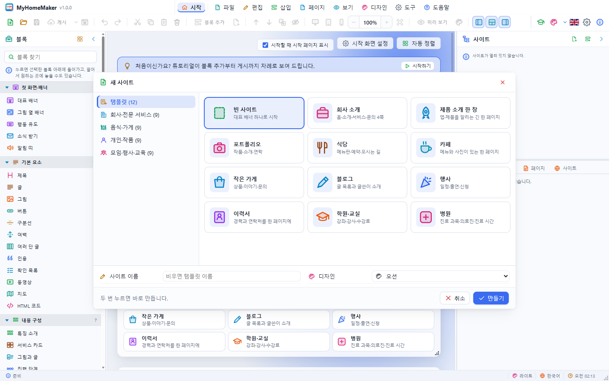
파일 › 새 사이트…(Ctrl+N)는 왼쪽에서 템플릿 또는 예제 분야를 고르고, 카드를 고른 뒤, 사이트 이름과(빈 사이트일 때) 디자인을 정해 만들기를 누릅니다. 카드를 두 번 누르면 바로 만들어집니다. 템플릿과 예제는 각자 어울리는 디자인으로 만들어집니다.
| 템플릿 | 들어 있는 것 |
|---|---|
| 빈 사이트 | 대표 배너 하나 |
| 회사 소개 | 홈·회사 소개·서비스·문의 4쪽 |
| 제품 소개 한 장 | 앱·제품을 알리는 긴 한 페이지 |
| 포트폴리오 | 작업·소개·연락 |
| 식당 | 메뉴판·예약·오시는 길 |
| 카페 | 메뉴와 사진이 있는 한 페이지 |
| 작은 가게 | 상품·이야기·문의 |
| 블로그 | 글 목록과 글쓴이 소개 |
| 행사 | 일정·출연·신청 |
| 이력서 | 경력과 연락처를 한 페이지에 |
| 학원·교실 | 강좌·강사·수강료 |
| 병원 | 진료 과목·의료진·진료 시간 |
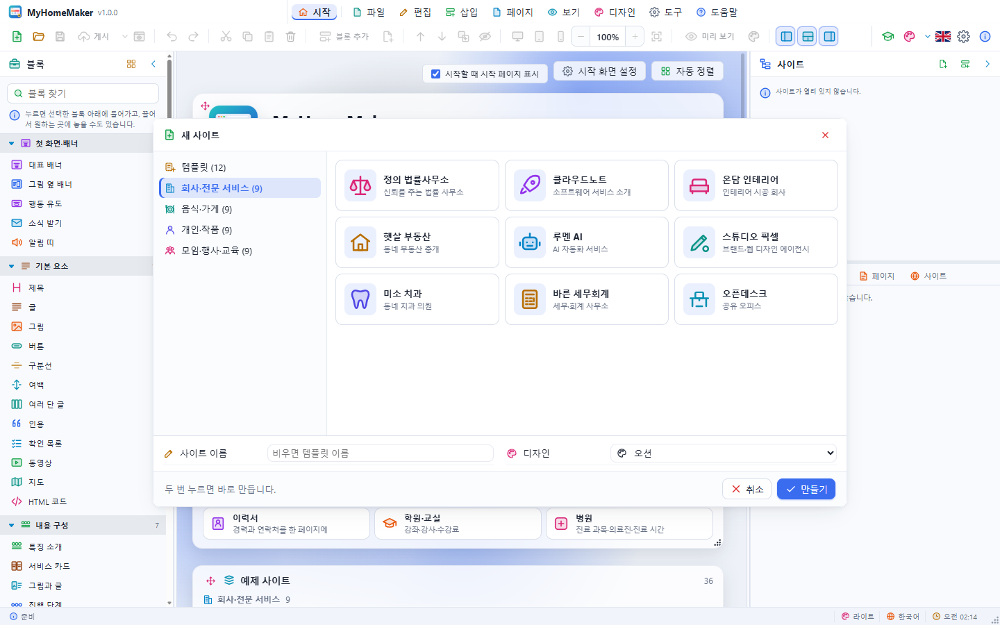
예제 사이트 40가지는 홈 구성이 여덟 가지(기본형, 분할 배너+숫자, 이야기형, 작품 전시형, 숫자·절차형, 팀 소개형, 공지·안내형, 상품형)로 나뉘고, 구성에 따라 우리 이야기 · 소식 · 자주 묻는 질문 페이지가 더해지는 완성된 사이트입니다. 그중 15가지에는 글이 들어 있는 게시판 페이지가 있습니다 — 헬프데스크 고객 포럼, 동네 장터, 팬클럽, 아파트 입주민 예제는 게시판이 중심이고, 모임·교육 예제와 치과, 공유 오피스 예제에도 게시판이 있습니다(카드에 게시판 표시). 열어서 블록이 어떻게 짜였는지 보고 그대로 고쳐 써도 됩니다(파일 › 예제 사이트 열기).
| 분야 | 예제 |
|---|---|
| 회사·전문 서비스 | 정의 법률사무소, 클라우드노트(소프트웨어), 온담 인테리어, 햇살 부동산, 루멘 AI(AI 자동화), 스튜디오 픽셀(디자인 에이전시), 미소 치과, 바른 세무회계, 오픈데스크(공유 오피스) |
| 음식·가게 | 밀과 버터(빵집), 비스트로 루나, 꽃다발 공방, 초록 농장, 오늘의 원두(커피 로스터리), 그린 보울(비건 식당), 한강 브루어리(수제 맥주), 달콤 상자(디저트 주문), 오늘 저녁(밀키트 배송) |
| 개인·작품 | 한결 사진, 그림 그리는 하루(일러스트), dev.minho(개발자), 민준 ♥ 서연(청첩장), 김하늘 디자인(UX 포트폴리오), 밴드 새벽(인디 밴드), 이준호 코칭, 박서연의 서재(작가), 여행하는 지우(여행 크리에이터) |
| 모임·행사·교육 | 사랑의 교회, 코딩 놀이터, 파워 짐, 주말 산악회, 웹 내일 2026(개발자 컨퍼런스), 숨 요가, 한 권의 밤(독서 모임), 같이 걷는 손(봉사 단체), 말하는 영어 학원 |
블록
블록 넣기
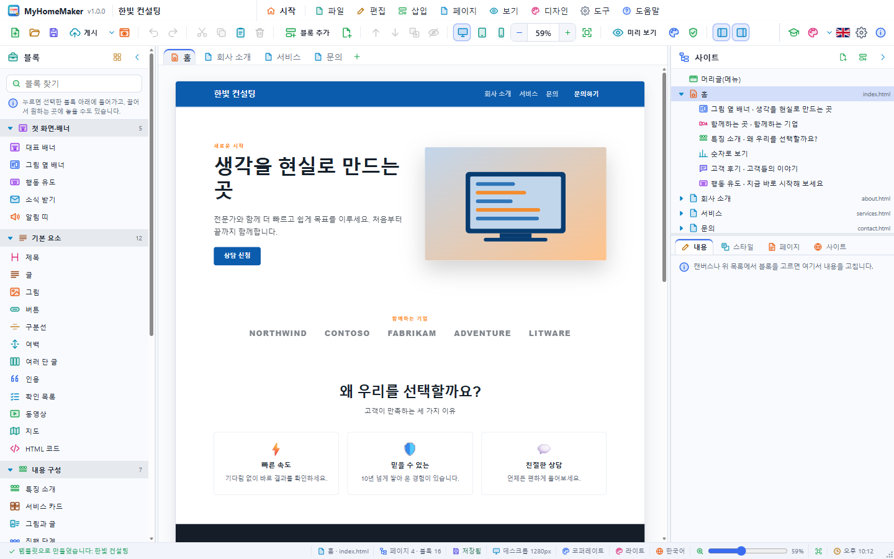
- 블록 패널의 블록을 누르면 선택한 블록 바로 아래에(선택이 없으면 맨 끝에) 들어갑니다.
- 블록을 캔버스로 끌면 놓일 자리에 파란 선이 보이고, 놓은 곳에 들어갑니다.
- 툴바의 블록 추가(Ctrl+Shift+A), 삽입 메뉴, 선택한 블록 아래의 + 단추, 빈 페이지 안내도 같습니다.
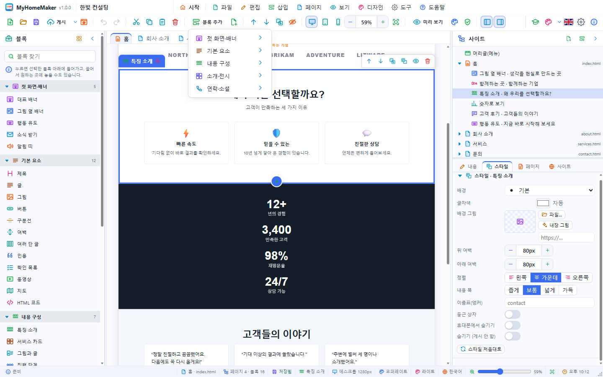
| 묶음 | 블록 |
|---|---|
| 첫 화면·배너 | 대표 배너, 그림 옆 배너, 행동 유도, 소식 받기, 알림 띠 |
| 기본 요소 | 제목, 글, 그림, 버튼, 구분선, 여백, 여러 단 글, 인용, 확인 목록, 동영상(YouTube·Vimeo·mp4), 지도, HTML 코드 |
| 내용 구성 | 특징 소개, 서비스 카드, 그림과 글, 진행 단계, 연혁, 숫자로 보기, 자주 묻는 질문, 게시판 |
| 소개·전시 | 사진첩, 고객 후기, 팀 소개, 함께하는 곳(로고), 가격표, 메뉴판, 일정, 글 목록 |
| 연락·소셜 | 문의·연락처(양식·지도 포함), 소셜 링크 |
게시판
게시판 블록은 글 목록(번호·분류·제목·글쓴이·날짜·조회)과 글마다의 본문을 보여 줍니다.
- 글은 내용 탭의 글 목록에서 더하고 고칩니다. 공지를 켠 글은 맨 위에 고정되고, 나머지는 최근 글부터 번호가 붙습니다. 본문에는 굵게, 기울임, 링크를 쓸 수 있습니다.
- 분류(쉼표로 나눔), 한 쪽에 보일 글(5·10·15·20), 검색 상자, 조회 수 보이기를 고릅니다.
- 게시한 사이트에서는 분류 단추, 검색, 쪽 번호가 동작하고, 제목을 누르면 그 글이 열립니다(자바스크립트가 꺼져 있어도 목록과 글은 보입니다).
- 글쓰기 단추는 글쓰기 양식을 엽니다. 정적 사이트는 스스로 글을 저장할 수 없으므로, 보낸 글은 글 보낼 주소(Formspree 같은 양식 서비스)나 받을 이메일로 전해지고, 확인한 뒤 내용 탭에서 게시판에 올립니다.
- 글 저장 위치 › 데이터베이스(게시판 서버) — 글을 데이터베이스에 둡니다. 연결은 설정 › 데이터베이스(또는 내용 탭의 데이터베이스 연결 설정…)에서 정합니다: SQLite3(기본, 파일을 비우면 프로그램 데이터 폴더의 board.db), MySQL, MariaDB, PostgreSQL, MSSQL. 연결 테스트로 확인하고, 비밀번호는 켜 둘 때만 설정에 저장합니다.
- 내용 탭의 DB로 글 저장은 이 게시판의 글로 DB의 글을 바꾸고, DB에서 글 가져오기는 DB의 글(웹사이트에서 쓴 글 포함)을 게시판으로 가져옵니다. 표
myhomemaker_board_posts는 자동으로 만듭니다. - 게시하면 사이트 옆에 server 폴더(게시판 서버)가 함께 만들어집니다. 서버 언어는 설정 › 데이터베이스에서 Node.js(기본), Go, Rust, Python 중 고릅니다. 이 언어들은 프로그램에 들어 있지 않습니다. 없는 언어는 같은 화면의 서버 언어 설치로 받습니다(웹 버전은 설치 페이지를 엽니다). Node.js 는
npm start(MySQL 등은 먼저npm install), Go 는go mod tidy다음go run ., Rust 는cargo run --release, Python 은python server.py(SQLite3 가 아니면 먼저pip install -r requirements.txt)로 띄웁니다. 비밀번호는DB_PASSWORD환경 변수입니다. 사이트와 게시판이 함께 열리고, 웹사이트에서 쓴 글이 바로 DB에 들어갑니다. SQLite3이면 지금 DB 파일이 함께 들어갑니다. 자세한 방법은 server/README.md 에 있습니다.
- 내용 탭의 DB로 글 저장은 이 게시판의 글로 DB의 글을 바꾸고, DB에서 글 가져오기는 DB의 글(웹사이트에서 쓴 글 포함)을 게시판으로 가져옵니다. 표
고르기와 옮기기
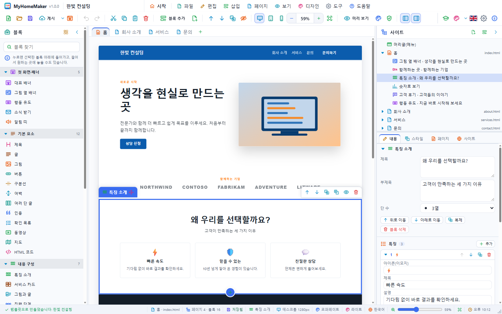
캔버스에서 블록을 누르면 테두리와 이름표, 도구 단추(위로·아래로·복제·스타일·숨기기·삭제)가 나타납니다.
- 이름표를 끌어 다른 자리에 놓거나, ↑ ↓ 단추·Ctrl+↑/↓로 한 칸씩 옮깁니다.
- Alt+↑/↓(또는 ↑/↓)로 이웃 블록을 고르고, Esc로 선택을 풉니다.
- 복제(Ctrl+D), 잘라내기·복사·붙여넣기(Ctrl+X/C/V; 다른 MyHomeMaker 창에도 붙여 넣을 수 있고, 일반 글을 붙여 넣으면 글 블록이 됩니다), 삭제(Delete)
- 숨기기(Ctrl+H) — 숨긴 블록은 흐리게 보이고 게시되지 않습니다.
- 사이트 패널 목록에서 줄을 누르면 그 페이지가 열리고 블록이 선택됩니다.
- 모든 바꿈은 실행 취소(Ctrl+Z)·다시 실행(Ctrl+Y)할 수 있습니다.
내용 고치기
캔버스에서 바로
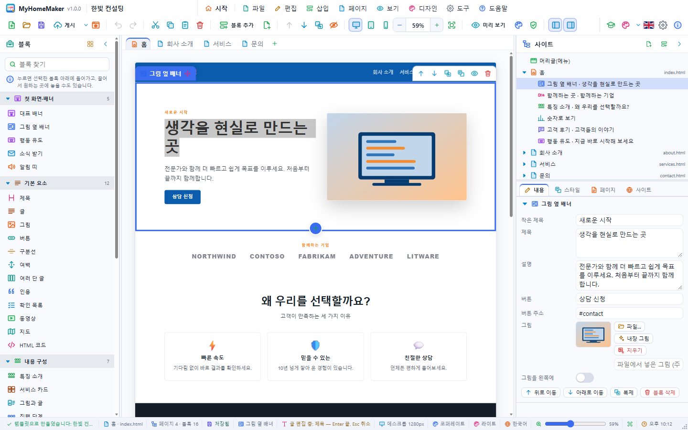
선택한 블록의 글을 한 번 더 누르면(또는 아무 글이나 두 번 누르면) 그 자리에서 고칩니다. Enter 로 끝내고 Esc 로 취소하며, 여러 줄 칸은 Shift+Enter 로 줄을 바꿉니다.
- 그림을 두 번 누르면 그림 파일을 고릅니다.
- 서식이 있는 글과 HTML 코드는 두 번 누르면 내용 탭의 그 칸이 열립니다.
- 머리글 메뉴 링크를 Ctrl+누르면 그 페이지로 갑니다.
- 맞춤법 검사가 켜져 있으면 사전에 없는 단어 밑에 빨간 물결선이 그어집니다(편집 화면에만, 게시한 사이트에는 없음).
내용 탭
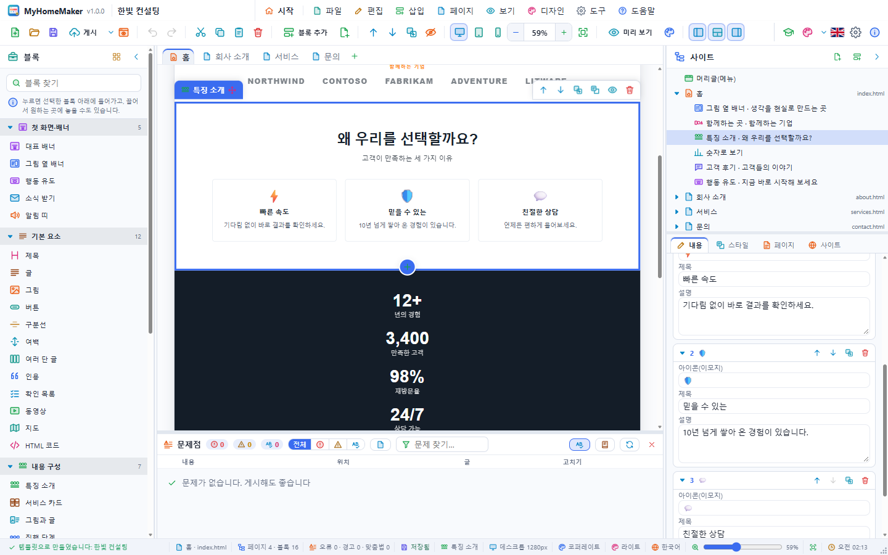
선택한 블록의 모든 칸이 나옵니다.
- 글(서식) —
**굵게**,*기울임*,[링크](주소), 빈 줄로 새 문단,-목록,1.번호 목록,##작은 제목 - 주소 — 다른 페이지 파일(목록에서 고름), 블록의 이름표(
#features), 웹 주소,mailto:,tel: - 그림 — 파일…(큰 사진은 긴 변 1920px 로 줄임), 내장 그림(16가지, 사이트 색으로 그려짐), 지우기, 그림 주소
- 항목 목록 — 특징·카드·사진·요금제·후기·사람·질문처럼 여러 개인 것: 추가 · 복제 · 위로/아래로 · 삭제, ▸ 로 접기
- 숫자 칸은 − + 단추와 직접 입력, 켜기/끄기는 스위치
- 버튼 속성 — 버튼 글자 칸(배너 버튼, 머리글 버튼, 버튼 블록, 요금제 버튼 등) 아래의 버튼 속성을 펼치면 그 버튼만의 모양(채움·테두리·링크·밝게), 크기(작게·크게), 모서리(각지게·더 둥글게·알약), 버튼 색·글자 색, 아이콘(이모지), 가로로 꽉 채우기, 새 창에서 열기를 정합니다. 비워 두면 블록 기본값입니다.
- 항목 속성 — 목록의 각 항목 아래 항목 속성에서 그 항목만 숨기기(게시할 때 빠짐, 편집 화면에서는 흐리게), 강조 테두리, 배경색·글자색을 정합니다.
- 입력 중에 다른 블록이나 페이지를 고르면, 쓰던 내용은 원래 블록(페이지)에 저장되고 칸은 새로 고른 것으로 바뀝니다.
- 오른쪽 클릭 메뉴는 지금 할 수 없는 항목(붙여 넣을 것이 없을 때의 붙여넣기, 첫 블록의 위로 이동, 하나뿐인 페이지의 삭제, 선택한 글이 없을 때의 잘라내기·복사 등)을 흐리게 보여 줍니다.
머리글과 바닥글
사이트마다 하나씩 있고 모든 페이지에 똑같이 나옵니다. 캔버스에서 누르거나 삽입 › 머리글(메뉴) 편집 / 바닥글 편집으로 고릅니다.
- 머리글 — 사이트 이름, 로고, 오른쪽 버튼(글자·주소), 배치(로고 왼쪽·가운데), 위에 고정. 메뉴에는 "메뉴에 보이기"가 켜진 페이지가 저절로 들어가고, 휴대폰에서는 ☰ 로 접힙니다.
- 바닥글 — 소개, 주소·전화·이메일, 링크 목록, 저작권 문구. 페이지 링크는 저절로 들어갑니다.
스타일 탭
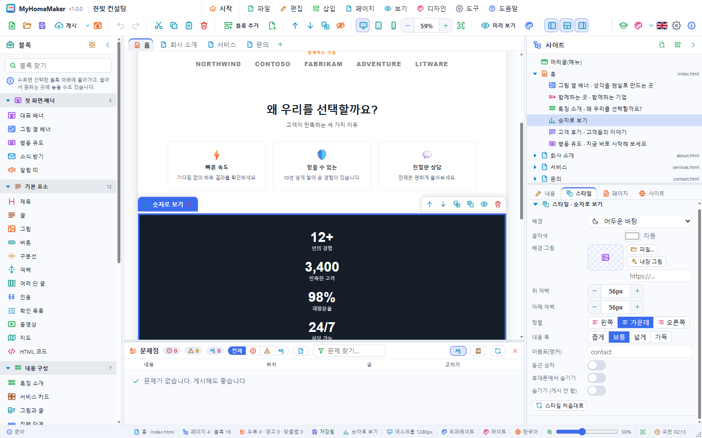
| 항목 | 뜻 |
|---|---|
| 배경 | 기본 · 옅은 바탕 · 주 색 · 강조 색 · 어두운 바탕 · 바닥글 색 · 직접 고른 색 |
| 글자색 | 자동(배경에 맞춤) 또는 직접 고른 색 |
| 배경 그림 | 블록 뒤의 그림과 그림 어둡게(%) |
| 위 여백 · 아래 여백 | 0–320px (휴대폰에서는 64px 까지로 줄어듦) |
| 정렬 / 내용 폭 | 왼쪽 · 가운데 · 오른쪽 / 좁게 · 보통 · 넓게 · 가득 |
| 이름표(앵커) | #이름 링크가 이 블록으로 옵니다 |
| 둥근 상자 · 휴대폰에서 숨기기 · 숨기기 |
스타일 처음대로는 그 블록의 기본 스타일로 돌립니다.
페이지
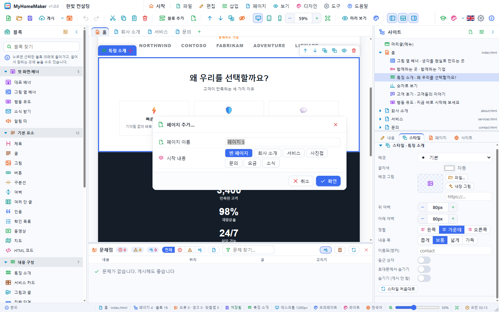
- 페이지 추가…(Ctrl+Shift+N, 탭 줄의 +) — 이름과 시작 내용(빈 페이지·회사 소개·서비스·사진첩·문의·요금·소식)을 고릅니다.
- 탭을 누르면 그 페이지로, 두 번 누르면 이름 바꾸기(F2). 오른쪽 단추 메뉴에 복제·삭제·옮기기가 있습니다.
- 이전/다음 페이지(Ctrl+PageUp/PageDown, Ctrl+Tab). 첫 탭은 언제나
index.html입니다.
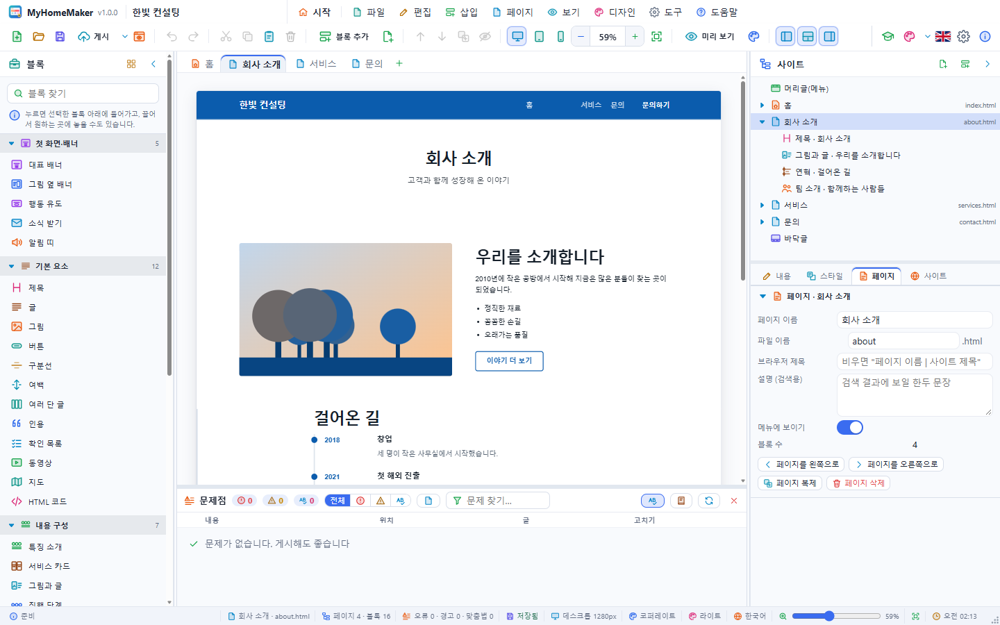
| 페이지 탭 | 뜻 |
|---|---|
| 페이지 이름 | 탭과 메뉴에 보이는 이름 |
| 파일 이름 | 게시할 때의 파일 이름(about → about.html). 흔히 쓰는 한글 이름(소개·서비스·문의 …)은 영어 파일 이름이 저절로 붙습니다. |
| 브라우저 제목 | 비우면 페이지 이름, 세로 막대, 사이트 제목 순서(첫 페이지는 사이트 제목만) |
| 설명 (검색용) | 검색 결과에 보일 한두 문장 |
| 메뉴에 보이기 | 끄면 머리글 메뉴와 바닥글 링크에서 빠집니다 |
디자인
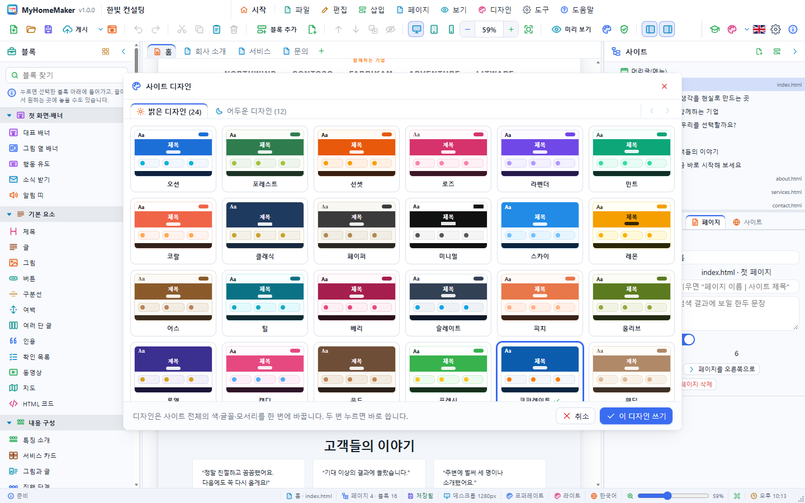
디자인 › 디자인 바꾸기…(Ctrl+Shift+D)는 밝은 디자인 26가지와 어두운 디자인 14가지를 작은 페이지 그림으로 보여 줍니다. 디자인은 주 색, 강조 색, 바탕, 글자, 머리글·바닥글 색, 제목·본문 글꼴, 모서리, 내용 폭, 글자 크기를 한 번에 정합니다. 모든 디자인은 글자와 배경의 대비가 읽기 좋게 맞춰져 있습니다. 내가 바꾼 색·글꼴을 남기려면 내가 바꾼 색·글꼴은 그대로 두기를 켭니다.
- 무작위 디자인, 디자인 사용자 설정 지우기(사이트 탭에서 바꾼 값을 디자인 기본값으로)
내 테마 — 디자인 창의 내 테마 탭에서 나만의 디자인을 만들어 모든 사이트에 씁니다.
- 새 테마 만들기 — 바탕 디자인을 고른 뒤 이름, 어두운 테마 여부, 색 12가지(주 색·주 색 위 글자·강조·바탕·옅은 바탕·글자·흐린 글자·테두리·머리글 바탕/글자·바닥글 바탕/글자), 제목·본문 글꼴, 모서리, 내용 폭, 글자 크기를 정합니다. 오른쪽 미리 보기가 바로 바뀝니다.
- 지금 사이트 디자인으로 — 사이트 탭에서 고친 지금 디자인으로 시작합니다. 디자인 › 현재 디자인을 내 테마로 저장…, 사이트 탭의 내 테마로 단추도 같습니다.
- 테마를 고르고 이 디자인 쓰기(또는 두 번 누르기)로 적용하고, 편집 · 복제 · 삭제합니다.
- 내 테마는 설정과 함께 보관되어 다시 설치해도 남고, 적용한 사이트는 테마 값을 파일 안에 저장하므로 테마를 지우거나 다른 컴퓨터에서 열어도 모양이 그대로입니다.
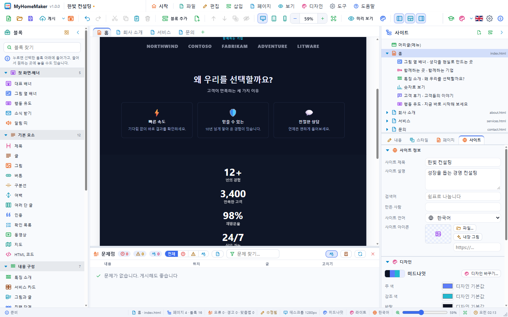
편집기의 사이트 탭:
- 사이트 정보 — 사이트 제목, 사이트 설명·검색어(검색 엔진과 공유 미리 보기), 만든 사람, 사이트 언어(
<html lang>), 사이트 아이콘 - 디자인 — 지금 디자인과 디자인 바꾸기…, 색·글꼴·모서리·폭·글자 크기. 바꾼 값 옆의 × 로 디자인 값으로 돌립니다.
프로그램의 테마는 MyHomeMaker 창의 색이고, 만드는 사이트의 디자인과는 따로입니다.
기기 너비와 미리 보기
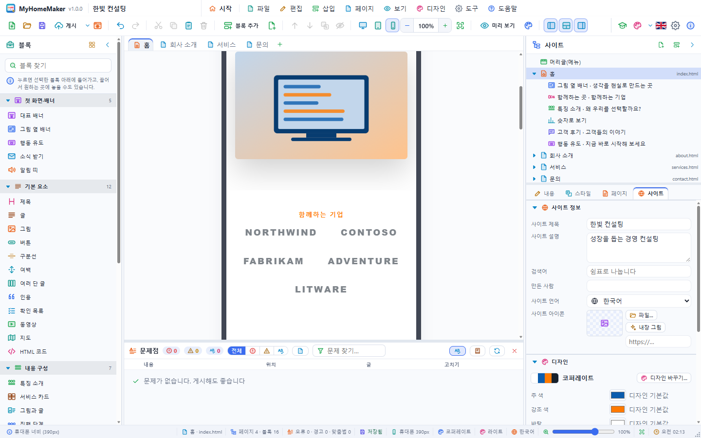
- 데스크톱(1280px) · 태블릿(820px) · 휴대폰(390px) 단추로 캔버스 너비를 바꿉니다. 사이트는 너비에 맞춰 단이 줄고(900px 이하 2단, 600px 이하 1단) 메뉴가 ☰ 로 접힙니다.
- 확대/축소 — − +, 비율 칸, Ctrl+휠, 상태 표시줄 슬라이더, 너비에 맞추기(Ctrl+Shift+W).
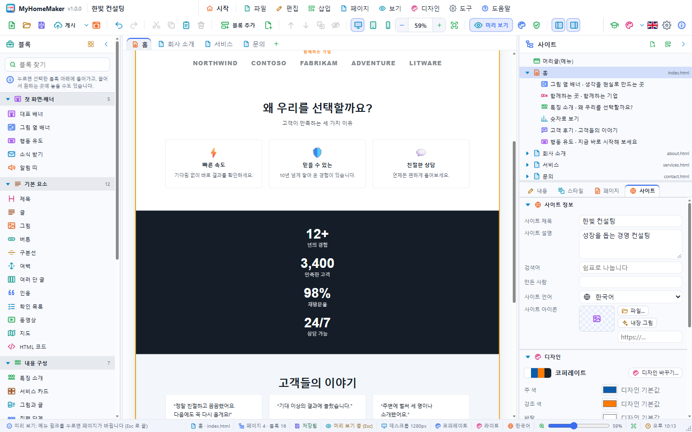
- 미리 보기 모드(Ctrl+E) — 편집 표시 없이 방문자가 보는 그대로. 메뉴 링크로 페이지가 바뀌고
#앵커링크는 그 블록으로 갑니다. Esc 로 끝냅니다. - 브라우저에서 미리 보기(F5) — 데스크톱: 사이트 전체를 임시 폴더에 써서 시스템 브라우저로 엽니다. 웹: 지금 페이지를 새 탭에 엽니다.
문제점 패널
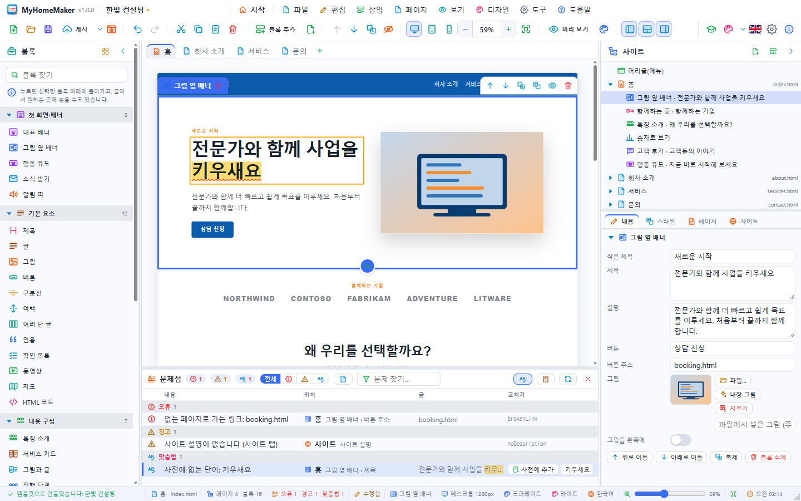
캔버스 아래의 문제점 패널은 사이트를 고칠 때마다(잠시 멈추면) 다시 검사해 고칠 점을 보여 줍니다. 툴바의 문제점 패널 단추(블록·사이트 패널 단추 사이)나 Ctrl+J로 열고 접고, 위 경계선을 끌어 높이를 바꿉니다. 상태 표시줄의 오류 · 경고 · 맞춤법 수를 눌러도 열립니다(도구 › 문제점 보기, Ctrl+Shift+M).
| 종류 | 점검하는 것 |
|---|---|
| 오류 | 없는 페이지로 가는 링크, 실행되는 주소(javascript:), 받는 곳 없는 문의 양식, 이름 없는 페이지, 파일 이름이 같은 페이지 |
| 경고 | 사이트 제목·설명 없음, 너무 긴 제목(60자)·설명(160자), 빈 페이지, 블록이 모두 숨겨진 페이지, 대체 글 없는 그림, 그림이 없는 그림 블록, YouTube·Vimeo 가 아닌 동영상 주소 |
| 맞춤법 | 영어·한국어 사전과 내 사전에 없는 단어 |
- 줄의 칸: 내용, 위치(페이지 › 블록 › 칸; 머리글·바닥글은 모든 페이지), 종류, 그 글의 일부(단어 표시), 고치기 단추.
- 누르면 그 페이지가 열리고 블록이 선택되며 캔버스의 그 칸이 깜빡이고 단어가 노랗게 표시됩니다.
- 두 번 누르면 오른쪽 편집기의 그 칸으로 가서 단어가 선택된 채로 바로 고칠 수 있습니다(사이트 제목·설명은 사이트 탭, 페이지 항목은 페이지 탭).
- 키보드: ↑ ↓ 로 줄을 옮기면 위치가 따라 보이고, Enter 는 그 칸으로 갑니다.
- 위쪽 줄: 오류·경고·맞춤법 수, 전체 / 오류 / 경고 / 맞춤법 거르기, 이 페이지만, 찾기 칸, 맞춤법 검사 켜기·끄기, 사전, 지금 검사, 접기(×).
게시하기 전에는 도구 › 사이트 점검과 게시 창이 같은 점검을 한 번 더 보여 줍니다.
맞춤법과 사전
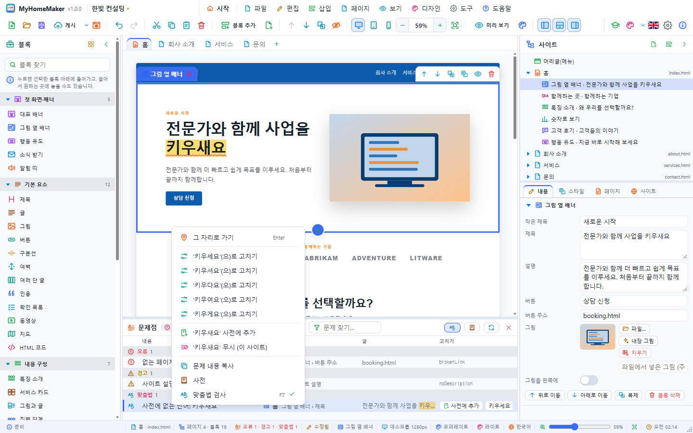
맞춤법 검사는 사이트의 모든 글(사이트 제목·설명·검색어, 페이지 이름·제목·설명, 블록의 글과 항목)을 봅니다. 주소, 이메일, 전화, 코드, 숫자가 붙은 말(3D, 24h), MyHomeMaker 처럼 대문자가 섞인 이름, 짧은 약자(FAQ, SNS)는 검사하지 않습니다.
- 영어 — 27만여 단어(복수·과거형 등 변화형 포함)와 축약형(
don't,we're), 소유격, 악센트(café). - 한국어 — 10만여 단어(Hunspell 한국어 사전). 어절에서 조사(을·를·에서·으로·입니다 …)와 어미(-습니다·-어요·-었습니다·-세요·-는·-ㄴ …)를 떼고 기본형으로 되돌려 찾습니다. ‘만듭니다 → 만들다’, ‘새로운 → 새롭다’, ‘고마워요 → 고맙다’, ‘불러요 → 부르다’ 같은 불규칙 활용과 ‘제작합니다 → 제작 + 하다’, 붙여 쓴 합성 명사(‘홈페이지제작’)도 압니다.
- 웹·디자인·음식·서비스에서 흔한 외래어와 서비스 이름(인스타그램, 브런치, 반응형 …)은 따로 넣어 두었습니다.
틀린 단어 줄에는 고치기 칸에 사전에 추가 단추가 있고, 줄을 고르면 고칠 단어 제안이 단추로 나옵니다(한국어는 ‘ㅐ/ㅔ’ 같은 모음 실수를 먼저, 영어는 겹친 글자·뒤바뀐 글자를 먼저 제안). 오른쪽 단추 메뉴:
- ‘…’(으)로 고치기 — 그 단어만 바꿉니다(실행 취소 한 번으로 되돌림).
- ‘…’ 사전에 추가 — 내 사전에 넣어 모든 사이트에서 다시 표시하지 않습니다.
- ‘…’ 무시 (이 사이트) — 프로그램을 닫을 때까지 이 사이트에서만 숨깁니다.
- 그 자리로 가기, 문제 내용 복사, 사전, 맞춤법 검사(F7)
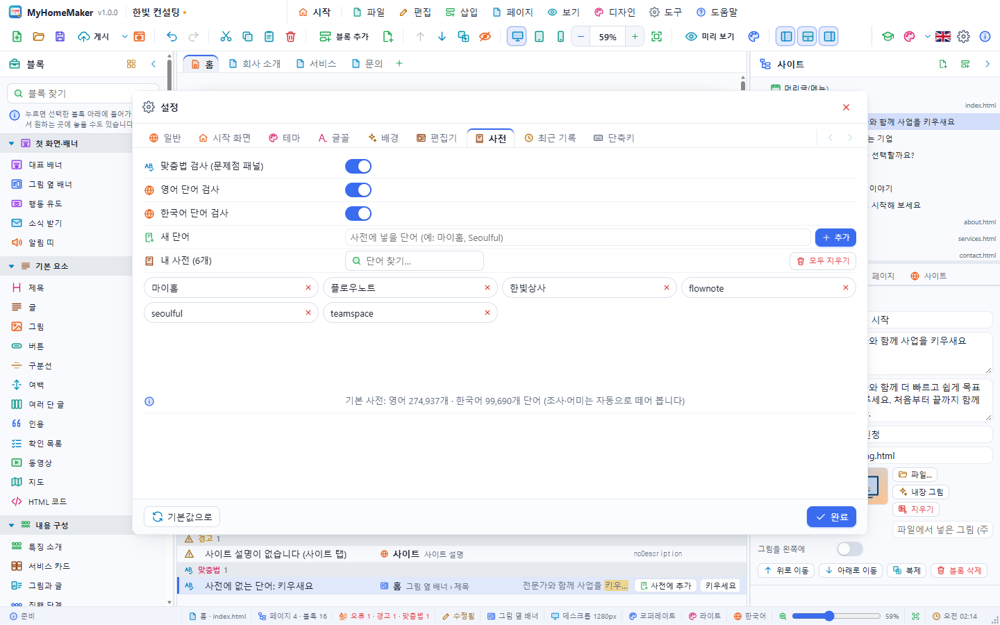
도구 › 사전(설정의 사전 탭):
- 맞춤법 검사 켜기·끄기(F7), 영어 단어 검사, 한국어 단어 검사
- 새 단어 칸에 쓰고 추가(또는 Enter). 한글 또는 영문 글자만, 40자까지. 영어는 대소문자를 가리지 않고 넣으며, 한국어 단어는 뒤에 조사가 붙어도 인정됩니다(‘마이홈’ → ‘마이홈에서’).
- 내 사전 목록: 찾기, 단어마다 ×로 지우기, 모두 지우기. 한 쪽에 24개씩 넘겨 봅니다.
내 사전은 설정과 함께 저장되며, 프로그램을 다시 설치해도 남습니다.
저장과 파일
- 저장(Ctrl+S) — 사이트는
.myhome파일 하나에 페이지·블록·그림·디자인이 모두 들어갑니다. 템플릿·예제로 만든 사이트는 처음 저장할 때 이름을 묻습니다. - 다른 이름으로 저장(Ctrl+Shift+S), 템플릿으로 저장…(
.mhomt: 열면 새 사이트로 시작) - 열기…(Ctrl+O), 최근 파일…(Ctrl+R), 최근 폴더, 기록 모두 지우기
- 사이트 닫기(Ctrl+W) — 저장하지 않은 변경이 있으면 묻습니다. 설정에서 자동 저장(1·5·10·30분)을 켤 수 있습니다.
- 사이트 파일을 창으로 끌어 놓아도 열리고, 그림 파일을 끌어 놓으면 선택한 블록의 그림이 됩니다.
- 한 창에는 사이트가 하나씩 열립니다. 여러 사이트를 함께 보려면 프로그램을 여러 번 실행하세요.
게시
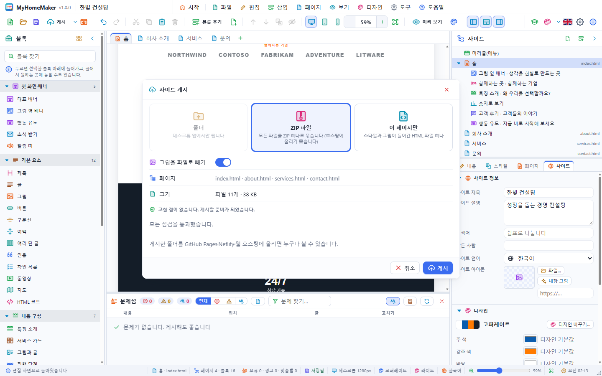
파일 › 게시·내보내기 › 사이트 게시…(Ctrl+Shift+P, 툴바의 게시):
| 방법 | 결과 |
|---|---|
| 폴더 (데스크톱) | 고른 폴더 안에 사이트 이름의 폴더를 만들고 index.html, 페이지마다 .html, style.css, assets/ 를 씁니다. |
| ZIP 파일 | 같은 파일을 ZIP 하나로 묶습니다. 호스팅에 올리기 좋습니다. |
| 이 페이지만 | 스타일과 그림이 들어간 HTML 파일 하나(메일·공유용) |
- 그림을 파일로 빼기를 켜면 그림이
assets/의 파일이 되어 페이지가 가벼워집니다(같은 그림은 한 번만). - 창 아래에 남은 확인할 점이 보입니다. 문제점 패널에서 미리 고쳐 두세요.
- 이 페이지 HTML 복사는 지금 페이지를 HTML 한 파일 내용으로 클립보드에 넣습니다.
게시한 파일은 숨긴 블록과 편집용 표시(맞춤법 물결선 포함) 없이 깔끔한 HTML·CSS 이며, 자바스크립트 없이 동작합니다(휴대폰 메뉴, 질문 펼치기 포함).
- 인터넷에 올리기 — 폴더나 ZIP 의 내용을 GitHub Pages, Netlify, Cloudflare Pages 또는 웹 호스팅에 올립니다.
- 문의 양식과 소식 받기 — 정적 사이트는 스스로 메일을 보낼 수 없습니다. 양식 보낼 주소에 Formspree·Getform 같은 양식 서비스 주소를 넣으면 메일로 전해 줍니다. 비우면
mailto:양식이 됩니다.
인쇄
파일 › 인쇄…(Ctrl+P, 툴바의 저장 오른쪽 인쇄 버튼)는 사이트의 페이지를 용지에 배치해 미리 보여 줍니다.
- 프린터·매수 — Windows 에서는 프린터를 골라 대화 상자 없이 바로 인쇄합니다. 프린터 목록이 없으면 시스템 인쇄 창이 열립니다.
- 인쇄 범위 — 모든 페이지, 현재 페이지, 페이지 범위(처음–마지막)
- 용지 설정 — 용지(A3·A4·A5·B4·B5·Letter·Legal), 세로·가로, 여백, 화면 폭(데스크톱·태블릿·휴대폰 너비로 그린 모습), 크기(용지 폭에 맞춤: 긴 페이지는 여러 장으로 / 한 장에 맞춤 / 배율), 배경색·배경 그림 인쇄
- 머리글·바닥글 — 사이트·페이지 이름과 날짜, 쪽 번호. 문구를 직접 쓸 수도 있습니다.
- 오른쪽 미리 보기는 실제 용지 모양이며, 아래 < > 나 PageUp·PageDown 으로 장을 넘깁니다.
툴바의 미리 보기(F5)는 사이트를 바로 브라우저에서 엽니다.
코드 편집기
도구 › 코드 편집기(Ctrl+Shift+E)는 HTML·CSS·JavaScript·JSON 파일을 편집하는 별도 창입니다. 파일 › 열기나 끌어 놓기로 .html·.css·.js 파일을 열어도 이 창에서 열립니다.
- 파일마다 탭이 생기고, 탭이 많으면 오른쪽 < > 로 넘깁니다. 가운데 단추·Ctrl+W 로 닫습니다.
- 구문 색, 줄 번호, 현재 줄 표시, 자동 들여쓰기(Enter·Tab·Shift+Tab), 주석 넣기/빼기(Ctrl+/), 자동 줄 바꿈, 글자 크기
- 찾기(Ctrl+F)·바꾸기(Ctrl+H, 대소문자·정규식, 모두 바꾸기), 줄로 이동(Ctrl+G)
- 정리(Shift+Alt+F) — Prettier 로 들여쓰기와 줄 바꿈을 정리합니다.
- 검사(F8) — JavaScript 는 JSHint, HTML 은 HTMLHint, JSON·CSS 는 프로그램이 직접 검사합니다. 결과를 누르면 그 줄로 갑니다.
- HTML 파일은 오른쪽에 미리 보기가 바로 보이고, 브라우저에서 보기도 됩니다.
- 사이트 CSS·JS·head — 열린 사이트 전체에 들어가는 코드입니다. CSS 는 디자인 스타일 뒤에, JavaScript 는 모든 페이지 끝에(게시할 때
script.js), head HTML 은 모든 페이지의<head>에 들어갑니다. 입력하는 대로 캔버스에 적용되고, 메인 창에서 실행 취소할 수 있습니다. - 보기 › 파일 편집(Ctrl+Shift+U)은 메뉴와 페이지를 그대로 둔 채 아래쪽에서 이 사이트의 HTML·
style.css·script.js를 고칩니다. 입력한 내용은 위의 페이지에 바로 반영되고, 저장은 사이트를 저장합니다. 툴바의 Word Wrap(Alt+Z)은 긴 줄을 다음 줄로 넘기고, 설정 › 편집기의 자동 Word Wrap이 다음에도 유지됩니다. 닫히지 않은 태그, 괄호, 문법 오류는 그 줄에 표시되고 아래 문제점 탭에도 나옵니다. 문제점을 두 번 누르면 그 줄로 갑니다. 페이지 HTML이나style.css를 블록·디자인에서 다시 만들 수 있습니다. - 도구 › 현재 페이지 HTML 편집은 그 편집을 지금 페이지의 HTML에서 엽니다.
패키지
코드 편집기의 정리·검사에 쓰는 도구(Prettier, JSHint, HTMLHint)는 설치 프로그램에 들어 있지 않고, 필요할 때 인터넷(jsDelivr, 안 되면 unpkg)에서 받습니다. 받은 파일은 SHA-256 으로 확인한 뒤에만 보관합니다.
- 프로그램을 시작하면 없는 패키지를 자동으로 받아 설치합니다. 설정 › 패키지를 열거나 그 스위치를 켜도 없는 패키지를 바로 받아 설치하며, 진행률이 그 창과 상태 표시줄에 보입니다. 스위치로 끌 수 있고, ×로 취소합니다.
- 받지 못하면 상태 표시줄에 다시 받기가 남고, 오류 내용은 패키지 창에서 볼 수 있습니다.
- 도구 › 패키지… 또는 설정 › 패키지 — 패키지마다 상태·크기·진행률, 받기 / 다시 받기 / 취소 / 삭제, 없는 패키지 모두 받기
설정
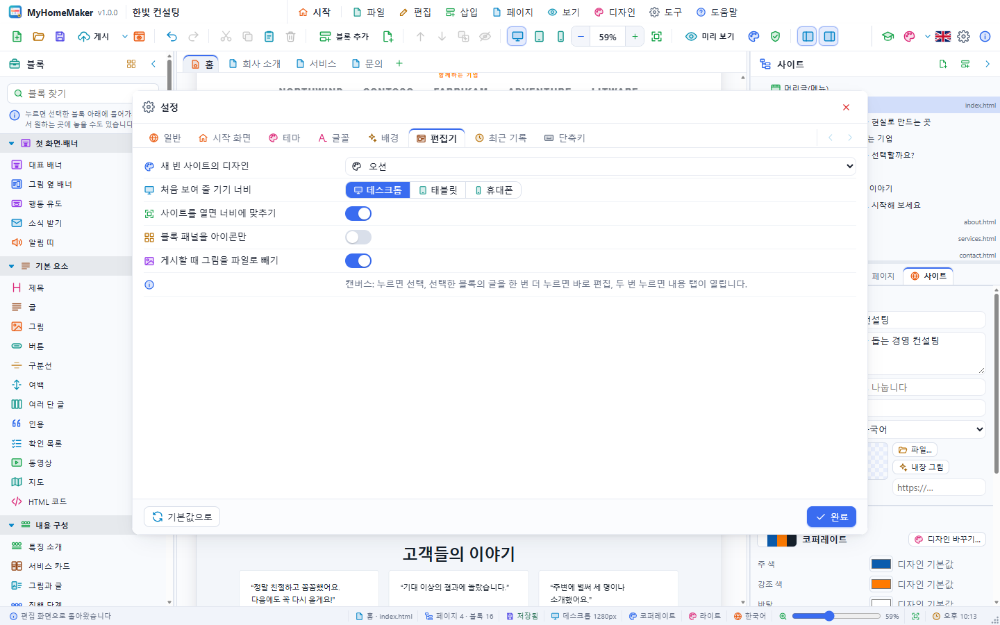
도구 › 설정…(Ctrl+,):
- 일반 — 언어, 지난번 파일 다시 열기, 삭제 전에 묻기, 상태 표시줄 시계·표시, 자동 저장, 튜토리얼 시작
- 시작 화면 — 시작할 때 보이기, 시작 안내 창, 보일 카드와 최근 항목 수
- 테마 — 어두운 20가지·밝은 20가지·사용자 테마(색을 직접 고르고 대비 경고)
- 글꼴 — 프로그램 글꼴·크기·굵기·기울임, 화면 확대
- 배경 — 움직이는 배경·그림·없음, 종류·속도·무작위·간격, 배경 그림과 불투명도·맞춤
- 편집기 — 새 빈 사이트의 디자인, 처음 기기 너비, 열 때 너비에 맞추기, 자동 Word Wrap, 블록 패널 아이콘만, 게시할 때 그림 빼기
- 사전 — 맞춤법 검사와 내 사전(위 참고)
- 최근 기록, 패키지(없으면 자동으로 받아 설치, 받기·다시 받기·취소), 데이터베이스(게시판 글을 둘 DB와 연결 테스트), 단축키
기본값으로는 설정을 처음으로 돌립니다(최근 파일, 배경 그림, 내 사전은 남음).
단축키
| 키 | 동작 |
|---|---|
| Ctrl+N / Ctrl+O / Ctrl+S / Ctrl+Shift+S | 새 사이트 / 열기 / 저장 / 다른 이름으로 저장 |
| Ctrl+W / Ctrl+R | 사이트 닫기 / 최근 파일 |
| Ctrl+Z / Ctrl+Y | 실행 취소 / 다시 실행 |
| Ctrl+X / Ctrl+C / Ctrl+V / Ctrl+D / Delete | 블록 잘라내기 / 복사 / 붙여넣기 / 복제 / 삭제 |
| Ctrl+↑ / Ctrl+↓, Alt+↑ / Alt+↓ | 블록을 위로 / 아래로, 이전 / 다음 블록 선택 |
| Enter / Esc / Ctrl+H | 내용 편집 / 선택 해제 / 숨기기 |
| Ctrl+Shift+A / Ctrl+Shift+N / F2 | 블록 추가 / 페이지 추가 / 페이지 이름 바꾸기 |
| Ctrl+PageUp / Ctrl+PageDown, Ctrl+Tab | 이전 / 다음 페이지 |
| Ctrl+= / Ctrl+- / Ctrl+0 / Ctrl+Shift+W | 확대 / 축소 / 100% / 너비에 맞추기 |
| Ctrl+E / F5 | 미리 보기 모드 / 브라우저에서 미리 보기 |
| Ctrl+Shift+P / Ctrl+Shift+D | 게시 / 디자인 바꾸기 |
| Ctrl+Shift+1 / Ctrl+J / Ctrl+Shift+2 | 블록 패널 / 문제점 패널 / 사이트 패널 |
| Ctrl+Shift+M / F7 | 문제점 보기 / 맞춤법 검사 켜기·끄기 |
| Ctrl+Shift+L / Ctrl+Shift+B / Ctrl+Shift+H | 언어 / 배경 바꾸기 / 시작 화면 |
| Ctrl+, / F11 / F1 | 설정 / 튜토리얼 / 프로그램 정보 |
튜토리얼과 도움말
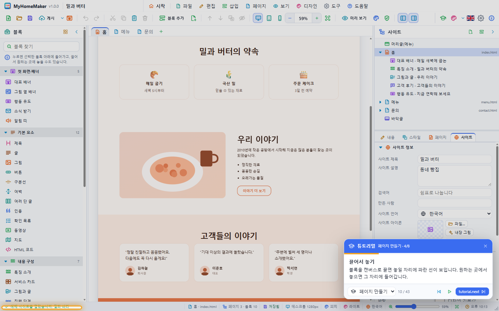
- 튜토리얼(F11) — 8개 장, 37단계. 빈 사이트에서 AI 노트 앱 ‘플로우노트’의 4개 페이지(홈·요금제·소개·문의)를 만들며 큰 첫 화면, 벤토 격자, 신뢰 요소, 다크 모드, 휴대폰 확인, 문제점·맞춤법 점검, 게시까지 보여 줍니다. 카드에서 앞뒤로·자동 재생·장 고르기, ✕ 나 Esc 로 끝냅니다. 어느 단계로 가도 그 단계까지 만든 사이트가 나오며, 끝나면 열려 있던 사이트와 바꾼 설정·사전이 그대로 돌아옵니다.
- 튜토리얼 동영상 —
MyHomeMaker-Tutorial.mp4(한국어, 소리 없음). 프로젝트 폴더와doc/video/에 있습니다. - 튜토리얼 문서, 사용 설명서 — 자기 창에서 목차와 함께 열립니다(한국어·영어).
- 시작 안내 창, 프로그램 정보(F1)
오류가 나면 자세한 내용이 오류 창에 나오고 복사로 그대로 옮길 수 있습니다.
파일 형식
.myhome 은 UTF-8 JSON 입니다: format: "myhomemaker", meta(제목·설명·언어 …), design(디자인 id 와 바꾼 값), layout(머리글·바닥글), pages(이름·파일 이름·블록). 블록은 type, props(내용), style(스타일)을 가집니다. 그림은 data URL 로 들어 있어 파일 하나만 옮기면 됩니다.
문제 해결
| 증상 | 해결 |
|---|---|
| 맞는 단어인데 맞춤법에 걸림 | 줄의 사전에 추가를 누르거나 도구 › 사전에서 넣으세요. 회사·사람 이름은 흔히 그렇습니다. |
| 맞춤법 줄이 너무 많음 | 패널의 오류·경고 거르기나 이 페이지만을 쓰거나, 한 언어만 검사하세요(설정 › 사전). |
| 게시한 사이트를 디스크에서 열면 그림이나 링크가 이상함 | 폴더째로 두고 index.html 을 여세요. 다른 페이지 파일과 assets/ 가 같은 폴더에 있어야 합니다. |
| 지도·동영상이 캔버스에서 안 보임 | 인터넷 연결이 필요합니다. |
| 문의 양식이 메일을 보내지 않음 | 문의 블록의 양식 보낼 주소에 양식 서비스 주소를 넣으세요. |
| 웹 버전에서 index.html 을 바로 열면 빈 화면 | 웹 서버로 여세요(예: npx vite preview, 또는 호스팅). |
개발자용
| 명령 | 하는 일 |
|---|---|
npm start | 개발용 앱 실행 |
npm test | 모든 테스트: 단위(js) · Rust · 웹(한·영 모든 기능) · 데스크톱. -- --quick 은 js·Rust 만 |
npm run build:dict | 맞춤법 사전(public/dict/)을 다시 만듦 |
npm run guide:images · npm run build:docs | 설명서 그림 · 문서 HTML |
npm run tutorial:docs · npm run tutorial:video | 튜토리얼 문서(단계별 그림) · 튜토리얼 동영상 |
npm run i18n:check | 번역 키 확인 |
맞춤법 사전: 영어 an-array-of-english-words(MIT), 한국어 dictionary-ko(hunspell-dict-ko, MPL·GPL·LGPL). 자세한 내용은 public/dict/LICENSES.txt.